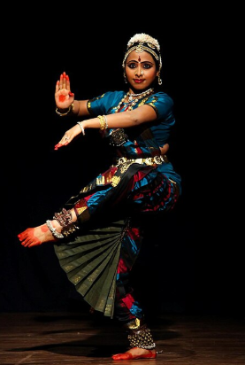
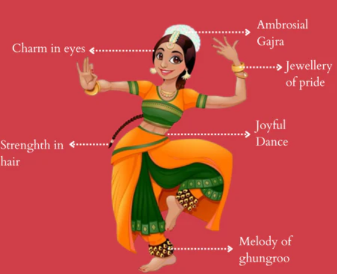
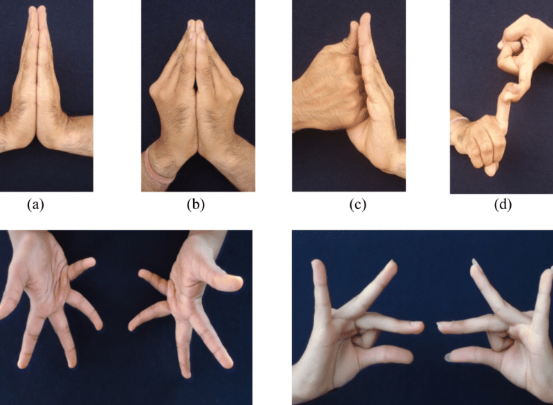
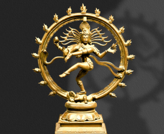

Bharatanatyam Dance

Graceful Bharatanatyam dancer in traditional attire
History
Bharatanatyam is one of the oldest classical dance forms of India, originating over 2,000 years ago in Tamil Nadu. It was traditionally performed by Devadasis (female temple dancers) as an offering to the deities in temples, especially to Lord Shiva. The term "Bharatanatyam" combines ‘Bha’ for Bhava (expression), ‘Ra’ for Raga (melody), ‘Ta’ for Tala (rhythm), and ‘Natyam’ meaning dance in Sanskrit. Over time, the dance evolved from a sacred temple ritual to a respected performing art. The revival of Bharatanatyam in the 20th century by pioneers like Rukmini Devi Arundale brought it to global recognition.
Elements
Bharatanatyam incorporates three primary elements:
Nritta: The pure dance form that emphasizes intricate rhythmic footwork and graceful body movements. It does not convey any story or emotion, focusing purely on aesthetics and technical aspects.
Nritya: This is the expressive part of Bharatanatyam where the dancer uses facial expressions, eye movements, and hand gestures (mudras) to convey emotions, moods, and stories, often based on devotional or mythological themes.
Natya: The dramatic element that combines dance with a narrative, portraying characters and scenes from Indian epics like the Ramayana and Mahabharata. It involves acting, dialogue gestures, and storytelling through movement.
The dancer traditionally wears a beautifully pleated costume adorned with temple jewelry, including earrings, necklaces, and headpieces. Bells (ghungroos) are tied around the ankles to accentuate rhythmic steps, and expressive makeup, especially around the eyes, enhances facial expressions to convey emotions vividly.
Sequence of Dances
A Bharatanatyam performance traditionally follows a structured sequence:
- Alarippu: The invocatory piece that warms up the body and sets the rhythm.
- Jatiswaram: A pure dance with complex rhythmic patterns.
- Varnam: The central piece combining both nritta and nritya, showcasing stamina and storytelling.
- Padams: Expressive pieces that communicate emotional themes of love, devotion, or separation.
- Thillana: A lively rhythmic number performed at the end.
- Shloka or Mangalam: A closing prayer or benediction.
Each segment flows into the next with increasing intensity and emotion, ending with gratitude toward the audience and deity.

Classical pose depicting grace and symmetry
Symbolism
Bharatanatyam is deeply symbolic. The mudras (hand gestures) represent objects, emotions, animals, and spiritual ideas. The eyes speak volumes, expressing longing, love, anger, or devotion. The dance reflects the eternal cosmic cycle — creation, preservation, and destruction — especially through depictions of Lord Shiva as Nataraja, the cosmic dancer. Every movement is infused with spiritual purpose and artistic elegance, making Bharatanatyam not just an art form but a path to divine expression.

